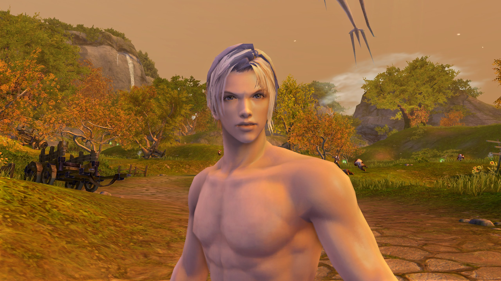
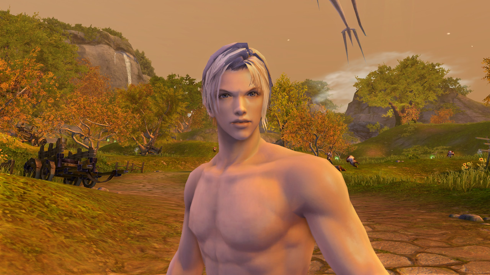

Introduction into Elden Aion 3.9
Aion is an MMORPG that focuses on both PvP and PvE. Elden has chosen this specific patch because it’s rich in PvP and PvE content, and it doesn’t include the overpowered classes introduced in the 4.x+ patches. In this guide, we’ll explore all the magic that comes from this patch, and why we love it so much.
First let's explain Elden Aion Rates:
Introduction into Aion Factions
Aion has 2 playable factions; Asmodians and Elyos. When creating your first character you're prompted to select one of these two factions.
Once your select your faction on your first character your account is locked to that faction, you can't create a character of the opposite faction on the same account.
Let's meet the Asmodian faction

"Blood for Blood."
Pandaemonium is the capital city of the Asmodians and the heart of Asmodae. Built amidst darkness and harsh lands, it stands as a testament to their strength, resilience, and unity under the Five Shedim Lords. It serves as the political, military, and cultural center of Asmodian life, where Daevas gather, train, and prepare for war against the Elyos.
What sets Asmodian characters apart
Asmodians are instantly recognizable compared to Elyos counterparts. Their harsh life in Asmodae shaped their bodies into something more feral and intimidating.
Their eyes are glowing red and golden adapting for night vision in their dark homeland. Their skin is pale to ashen, reflecting their lack of sunlight. Their hair is darker and more muted in tone. Their claws are sharp on both hands and feet, a distinct evolutionary trait that gives them grow a thick ridge of coarse hair that runs from the top of the head down to the back of the neck, shoulders and back. Also known as Asmodians mane
Examples of Asmodian distinct appearance
Asmodian maps
Ishalgen
Level 1 to 9

Altgard
Level 10 to 20
Morheim
Level 20 to 40
Beluslan
level 30 to 48
Brusthonin
Level 20 - 25 || Level 45 to Level 50

Gelkmaros
Level 50 to 60
Let's meet the Elyos Faction

"Light and Grace."
Sanctum is the capital of Elyos and the shining jewel of Elysea. Nestled amidst luminous landscapes, it is a hub of culture, politics, and military strategy. Elyos gather here to train, celebrate their civilization, and plan their defense against the Asmodians.
ELyos are characterized by sun-kissed skin, bright or golden eyes, and smooth hair. Unlike the feral Asmodians, they have a graceful builds, angelic features and natural aura of light. They lack the clawed extremities and mane of asmodians.

 

Elyos Territories
Poeta
Level 1 to 9
Verteron
Level 10 to 26
Eltnen
Level 26 to 35
Heiron
Level 35 to 46
Theobomos
Level 46 to 53
Inggison
Level 50 to 60
Let's talk about Leveling!
In Elden Aion we are more focused on endgame while we still offer leveling and questing experience the classic way of Aion. You are given at early levels free untradeable scrolls, candy, and titles to help you level up easily. As well as upon reaching level 10 and completing your ascension quest, you obtain your starter gear. We baked a custom starter gear appearance because we know everyone is bored from the same blinding white gear look we always had. We have sleek new outfits that we are sure you're going to love.
For more information about leveling guides.


.png)

.png)
.png)


.png)


.png)

.png)
.png)